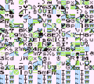

Metroid Prime
This article must comply with the non-Pokémon glitches guideline.
| Metroid Prime | |
| Wikipedia link | Metroid Prime |
| Developer(s) | Retro Studios, Nintendo |
| Publisher(s) | Nintendo |
| Platform(s) | Nintendo GameCube |
| Release date(s) | February 28, 2003 (Japan) November 17, 2002 (USA) March 31, 2003 (Europe) April 3, 2003 (Australasia) |
This article may need a cleanup for better quality.
| |
|  | If possible, please edit this article to improve factors like the readability, accuracy and clarity of the article. |
Metroid Prime is a game in Nintendo's Metroid series for Nintendo GameCube, following Super Metroid from eight years ago since the release of this game in 1994.
Contents
Enemy Glitches
Frozen Omega Pirate
Makes the Omega Pirate temporarily immobile, allowing you to deal damage before it even attacks. You must have previously seen the cutscene before the Omega Pirate breaks out of its stasis chamber Go to the far left or right sides of the room and walk to the area where to cutscene occurs. Skip the cutscene. This will only work on the earlier discs of the North American GameCube version. The bottom of the disc must read DOL-GM8E-0-00 USA or DOL-GM8E-0-00 JPN.
Meta Ridley Glitch
Heavily damages Meta Ridley, taking him to his ground phase. You must have the Boost Ball in order for this to work and the battle also must be in the aerial phase. When Meta Ridley lands during the aerial phase of the battle, Boost into his chest. This will only work on the GameCube versions of the game.
Metroid Prime Glitch
Keeps the Metroid Prime from hurting you in the final phase. Be in the final boss battle with the Metroid Prime During the battle, look to your right for a small red root thing. jump on top of it and stay there. The Metroid Prime's ground energy attack will not harm you All other attacks, including contact, will still harm you. This is possible in all versions, including the trilogy.
Bugs
Chozo Ruins Crash
Crashes the game Have the original North American version of the game Use one of the elevators in the Chozo Ruins. This only works in the original North American version of the game and has been corrected in later releases. This will also only occur on rare occasions and will not damage any saved game.
Artifact of Warrior disappear
Causes the Artifact of Warrior to disappear without being collected. Have an older version of the game and be at where you collect the artifact. After defeating the Phazon Elite, leave the room, and reenter. This makes the save file unable to be beaten, forcing the start of a new file. It has been fixed in later versions of the game by locking the door, forcing Samus to collect the artifact.
Sound Bugs
Music
Metroid Prime
Prevents music from playing during the battle against Metroid Prime's core essence Have previously seen the cutscene before the battle on the current file Skip the cutscene before Metroid Prime emerges from the remains of its exoskeleton
Save Stations
Repeats the track that plays in Save Stations Have saved the game previously Load the game from any Save Station This only occurs on occasion and the correct track for the area you are currently in will start when you enter a location with a different track
Miscellaneous Glitches
Rapid Fire Missiles
Allows Missiles to be launched at a much higher rate Have the Missile Launcher, Power Beam must be used Press Y Button (Dpad Down in the Wii versions) to launch a Missile then fire the Power Beam with A Button(A Button in the Wii versions), alternate between the two to fire large amounts Missiles in a short amount of time This occurs in all versions of the game, up the three Missiles may be out at the same time. In the GameCube version of the game, instead of using the Power Beam, the C-Stick may be tilted up and only Y Button will need to be pressed